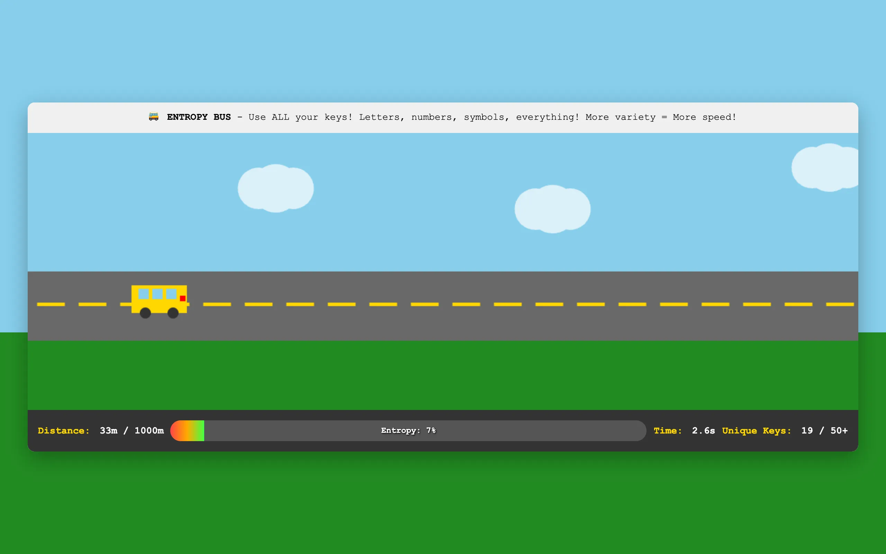

Most racing games ask you to press the right key at the right time. This one asks you to press the wrong key. Or rather, every key. The bus accelerates based on the entropy of your keyboard input. Mashing the same key does almost nothing. Alternating between two keys does a little more. But if you use all your keys, letters, numbers, symbols, punctuation, shift combinations, with irregular timing and no discernible pattern, the bus flies.

{kind=link}
Measuring entropy
The entropy calculation looks at your keystrokes within a rolling four-second window. It penalizes several kinds of predictability: sequential key presses (like typing "asdf"), alternating patterns (like bouncing between two keys), and repeated bigrams (like pressing the same two-key sequence multiple times). It rewards even distribution across many different keys and irregular timing between presses.

{kind=link}
The result is a number between 0 and 1. Zero means your input is completely predictable. One means it's maximally random. This entropy value maps to velocity. A bus driven by high entropy can reach 15 meters per second. A bus driven by someone holding down the spacebar barely moves.
The stat display shows your entropy as a color-coded bar that shifts from red (low) through yellow (medium) to green (high). There's also a unique key counter that tracks how many distinct keys you've pressed, capping around 50. Both numbers update in real time so you can see the immediate effect of switching up your input strategy.
The game
You're racing 1000 meters to a checkered finish line. Velocity decays by a friction factor of 0.96 each frame, so you need continuous input to maintain speed. Stop typing and the bus coasts to a halt. The challenge isn't physical endurance (though your fingers may disagree). It's mental. Your brain wants to fall into patterns. It wants to settle on a comfortable sequence of keys and repeat it. The game punishes exactly that instinct.
I found myself doing strange things while playing. Closing my eyes and letting my fingers wander. Using my palms. Deliberately typing nonsense words to access keys I wouldn't normally think of. The optimal strategy is to become a random number generator, which is something humans are notoriously bad at. Studies on human random generation consistently show that people underrepresent certain sequences and overrepresent others. The game turns that cognitive bias into a difficulty curve.
On mobile, there's a large purple button you tap instead. The entropy comes from the timing variance between taps rather than key variety, since a touchscreen only has one input. Tapping at irregular intervals produces higher entropy than tapping at a steady rhythm.
Pixel art
The visual style is deliberately retro. The bus is a golden rectangle with windows, wheels, and a red taillight, rendered in chunky pixels. White clouds drift across a blue sky gradient. A gray road scrolls beneath the bus. Green grass sits below the road. The finish line is a black-and-white checkerboard pattern. Nothing is anti-aliased. The aesthetic is retro pixel art with chunky sprites and flat colors.
When you cross the finish line, the game shows your total time and average speed in kilometers per hour. My best runs hover around 80 seconds. Getting below 70 requires sustained high entropy, which means sustained randomness, which means fighting every pattern-seeking instinct your brain has. It's a surprisingly difficult thing to do on purpose.